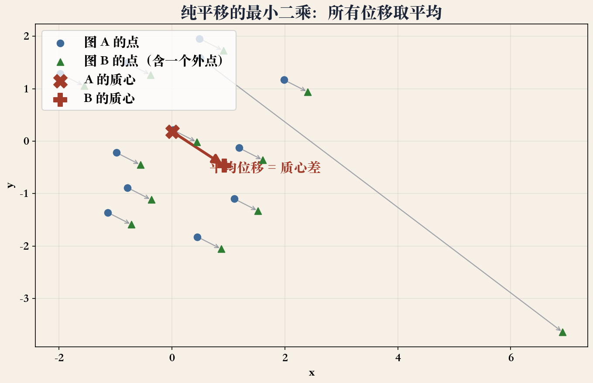
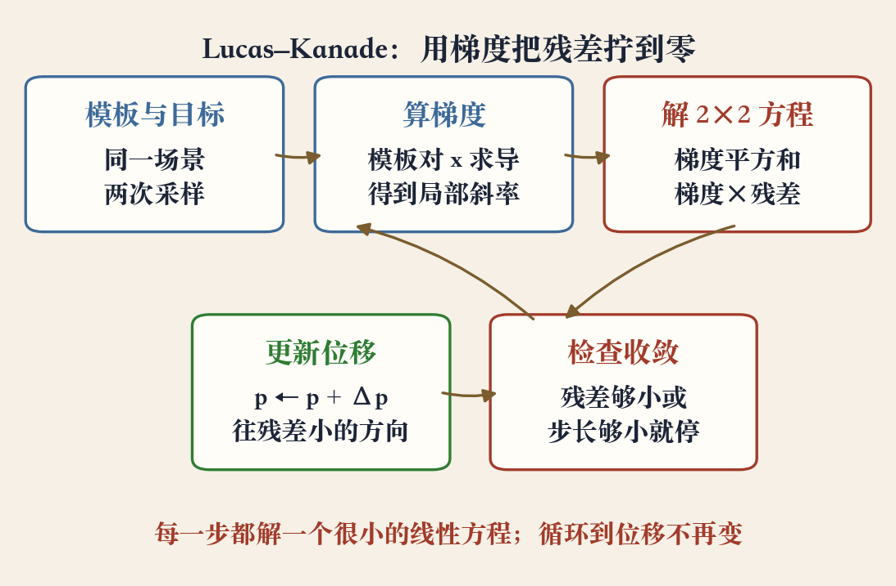
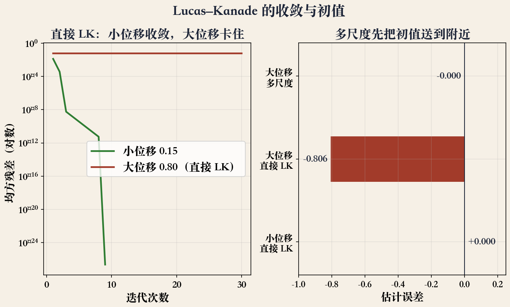

第 8 章 · 两条求解路线
从怎么动到怎么解
- 上一集讲五种变换，只说允许怎么动。
- 这一集回答：参数怎么从数据里求。
- 一条路：先找匹配点，再做最小二乘。
- 另一条路：直接用像素梯度猜位移。
依据：本集课程编排；原书第 504–509 页
两条路
匹配点：最小二乘
像素梯度：Lucas-Kanade
同一个残差，两种算法
最小二乘 · 残差
最小二乘：让残差平方和最小
- 有一组匹配点和一个参数化变换。
- 预测位置减实测位置，得到残差。
- 所有残差平方加起来，让总和最小。
- 平方让正负不抵消，大误差受重罚。
依据：原书第 504 页
最小二乘 · 线性模型
线性模型：一次矩阵求解
- 平移、相似、仿射，运动量与参数线性相关。
- 位移写成雅可比矩阵乘参数。
- 最小二乘变成线性回归。
- 求导令其为零，得到正规方程。
依据：原书第 505 页
Δx = J p
J 的每一列：这个参数动一点，像素往哪走
最小二乘 · 纯平移
纯平移：答案就是平均位移
- 纯平移的解等于所有对应点位移的平均。
- 也等于两组点的质心之差。
- 平移对所有点一视同仁，只能取平均。
- 实验读数：横移 0.42，竖移 −0.23。
依据：原书第 505 页；本集实验

纯平移最小二乘：平均位移 = 质心差｜程序生成，未用教材或论文原图
最小二乘 · 加权
加权：谁可靠，谁多说话
- 不是所有匹配都一样可靠。
- 纹理丰富的点定位准，平坦区会飘。
- 每个点给方差估计，方差大权重小。
- 加权误差 0.0142，未加权 0.651。
依据：原书第 505 页；本集实验
权重从哪来
匹配的不确定度
权重矩阵是对角阵
角点权重高，平坦区低
非线性 · 旋转
一有旋转，方程就非线性
- 欧氏变换的雅可比含旋转角的正弦余弦。
- 它依赖当前参数值，方程不再线性。
- 判断办法：雅可比里有没有当前未知量。
- 有，就得迭代；每次都要重算雅可比。
依据：原书第 507 页
线性与非线性
线性：一次解完
非线性：一步步逼近
初值决定能不能收敛
迭代 · 高斯-牛顿
迭代：在当前位置线性化
- 在当前参数附近做一阶展开。
- 把非线性问题近似成关于增量的问题。
- 解出增量，更新参数，再展开一次。
- 这就是高斯-牛顿，也是 LK 的迭代框架。
依据：原书第 507 页
正规方程 · LM
正规方程与阻尼
- 矩阵是雅可比的转置乘雅可比。
- 右端是雅可比乘残差。
- 对角线上加一点 λ，步子就会缩短。
- λ 大稳但慢，λ 小快但可能冲过头。
依据：原书第 508 页
(JᵀJ + λI) Δp = Jᵀ r
λ：阻尼项；实际实现常用自适应 λ
三乘三 · 初值
三乘三：平移加旋转
- 未知量是横移、竖移、转角三个增量。
- 每一步解一个三乘三的方程。
- 初值：先拟合四参数相似变换，再取角度。
- 或用质心估平移，用极坐标估旋转。
依据：原书第 508 页
代价在哪
三乘三很小
贵在每次迭代重采样图像
初值越近越稳
单应 · 八参数
单应：八参数的雅可比
- 单应雅可比的每一行都带当前预测坐标。
- 分母 D 也随参数变。
- 八个未知量，尺度可以固定一个。
- 套路一样：线性化、解增量、更新。
依据：原书第 508–509 页
Lucas-Kanade · 迭代管线
Lucas-Kanade：让像素自己说话
- 拿一张模板和一张目标图。
- 在当前位移处搬模板，减出残差。
- 用模板梯度构造方程，解位移增量。
- 更新后再来一遍，直到收敛。
依据：原书第 507–508 页；本集实验

Lucas-Kanade 迭代管线：模板、梯度、更新｜程序生成，未用教材或论文原图
大位移 · 多尺度
大位移：先粗后细
- 位移小，几步就收敛。
- 位移大，一阶近似失效，直接 LK 卡住。
- 实验：0.8 的位移，直接 LK 误差 0.806。
- 多尺度之后，误差几乎为零。
依据：本集实验；原书第 507–508 页

收敛与初值：小位移收敛 / 大位移卡住 / 多尺度救回｜程序生成，未用教材或论文原图
两个坑 · 孔径与纹理
两个坑：孔径与纹理
- 窗口里只有一条边，梯度都朝一个方向。
- 沿边方向的位移说不清，方程病态。
- 平坦区域梯度接近零，矩阵几乎奇异。
- 条件数比残差更早报警。
依据：本集归纳；回链原书第 507–508 页
怎么办
选有角点、有纹理的窗口
加正则、加阻尼
孔径问题是信息不足
外点 · 鲁棒
外点：先保命，再求精
- 平方会放大外点的误差。
- 一个外点就能带偏整组解。
- 鲁棒损失把大残差的权重降下来。
- RANSAC：先随机采样找一致集，再最小二乘。
依据：原书 §8.1.4 过渡；本集归纳
实验 · 十项读数
实验：十项都对上了
- 平移 0.42、−0.23；仿射误差 5.55e-16。
- 加权 0.0142，未加权 0.651。
- 旋转 20°，4 步收敛；小位移 LK 误差近零。
- 大位移误差 0.806，多尺度救回；LM 0.42→0.21。
依据：本集实验读数
数字都有存证
10 项断言全 PASS
换图换初值可重跑
对不上先查初值和权重
收束 · 下一集
能线性的，一次解完
- 能线性的，一次最小二乘。
- 不能线性的，线性化后迭代。
- 外点用鲁棒或 RANSAC。
- 大位移用多尺度；下一集讲单应。
依据：本集总结；移交 E076
一组工具
线性解 / 迭代 / 加权
多尺度 / 鲁棒
下一集：单应参数化